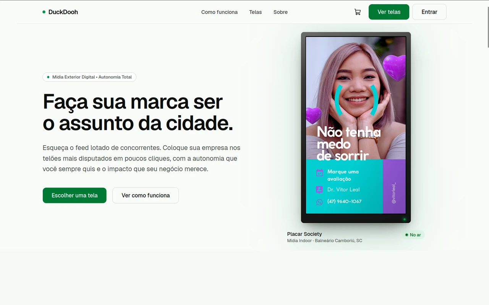

DuckDooh
Da escolha da tela à veiculação da campanha. Uma plataforma que conecta anunciantes à mídia exterior digital, com contratação e pagamento pela web.
Desenvolvimento completo
Criei a arquitetura, o frontend, o backend, as APIs e o banco de dados.
- Next.js
- TypeScript
- Python / FastAPI
- PostgreSQL
- Asaas
- Yodeck
Detalhes do DuckDooh
O desafio
Conectar a escolha de telas e a contratação de campanhas aos serviços de pagamento e veiculação.
Implementação
Frontend em Next.js, API em FastAPI e persistência em PostgreSQL. Asaas e Yodeck compõem as integrações externas do produto.
O que desenvolvi
Desenvolvi a interface, as regras de negócio, a API, a estrutura de dados e as integrações externas.